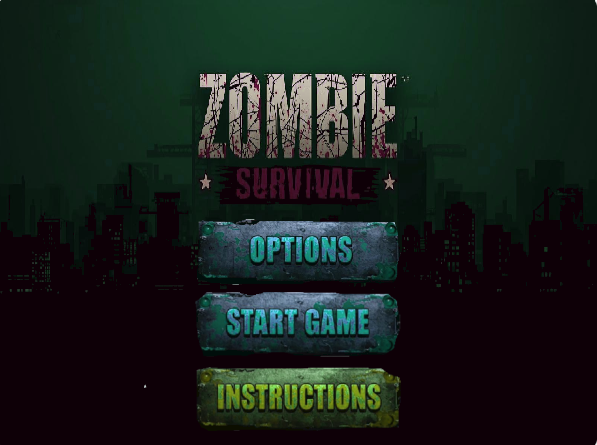

Zombie Survival started as an idea when I came across the possibility of creating my own game. I've always had this fascination for zombies, either in other games or in movies.
I had no idea how to start or what to do, since my coding knowledge at the time was almost nothing.
However, once I started learning how to use the Scratch platform, it stopped being a possibility and became a reality.

A description is nothing compared to actually playing the game, so if you want to do so, go to Zombie Survival and have some fun! Zombie Survival has three stages. Each stage increases the level of the enemies, but also gives the player better perks to fight them. Each stage is inspired in the most renowned cities in the world. Dive in and explore this dedicated website to Zombie Survival. Pro tip: Click twice on the green flag in scratch to avoid any glitches or bugs in the game.
A new version of the game is planned to be developed soon. In the Main Menu of the game the player can see an options section. This area is designed to let the player change different settings to the game. Sounds, music and more are planned to be added on this section, to provide the player a better in-game experience.